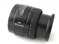

njjx2014-07-04 15:514.83 分
操作性 5.00耐用性 4.50性价比 5.00解像力 5.00色彩还原 5.00机械结构 4.50
我用美能达2012-12-14 20:044.58 分
操作性 4.50耐用性 4.50性价比 4.50解像力 5.00色彩还原 4.50机械结构 4.50
四月下午2012-04-25 17:434.42 分
操作性 4.00耐用性 4.50性价比 4.50解像力 5.00色彩还原 4.50机械结构 4.00
daydreamwww2009-07-21 11:164.58 分
操作性 4.00耐用性 4.50性价比 5.00解像力 5.00色彩还原 5.00机械结构 4.00
m262009-01-12 14:544.67 分
操作性 5.00耐用性 4.50性价比 5.00解像力 4.50色彩还原 4.50机械结构 4.50
开心猫猫5202008-10-28 08:314.42 分
操作性 4.50耐用性 4.50性价比 3.00解像力 5.00色彩还原 5.00机械结构 4.50
HWJ2007-01-05 14:444.42 分
操作性 4.50耐用性 4.50性价比 3.50解像力 4.50色彩还原 5.00机械结构 4.50
cnbc2005-07-17 21:254.58 分
操作性 4.50耐用性 4.50性价比 5.00解像力 5.00色彩还原 4.50机械结构 4.00
